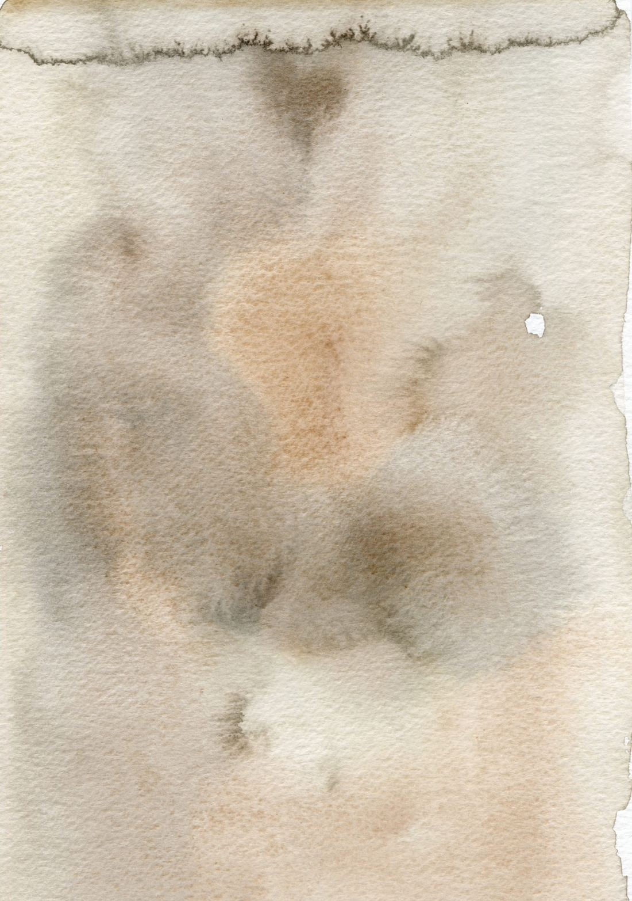

Antes de la sesión 1
Una invitación a imaginar
Escucha estas palabras antes de empezar el recorrido. Cuentan de dónde nace este espacio, qué vas a encontrar en él y qué necesitas tener listo.
16 minutos
Escucha estas palabras antes de empezar el recorrido. Cuentan de dónde nace este espacio, qué vas a encontrar en él y qué necesitas tener listo.
16 minutos
Te recomendamos escucharla en tu casa, en el lugar donde vas a hacer el resto de las sesiones.

Antes de tu primera sesión, ten listas estas cuatro cosas. Te van a acompañar durante todo el recorrido.